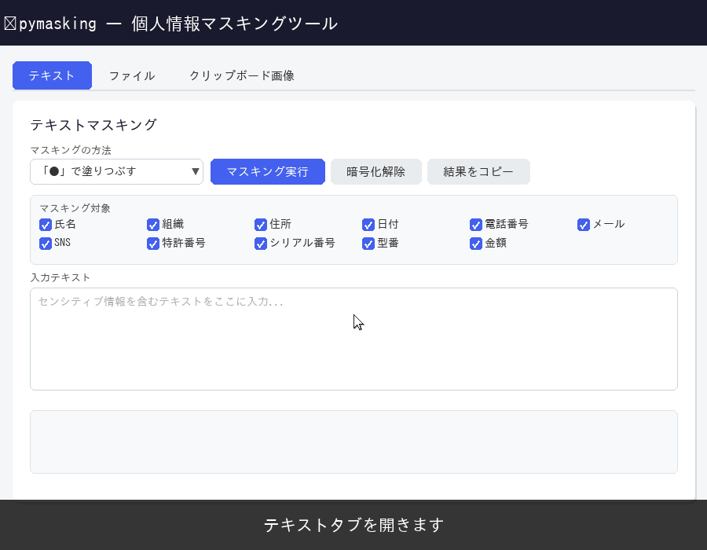
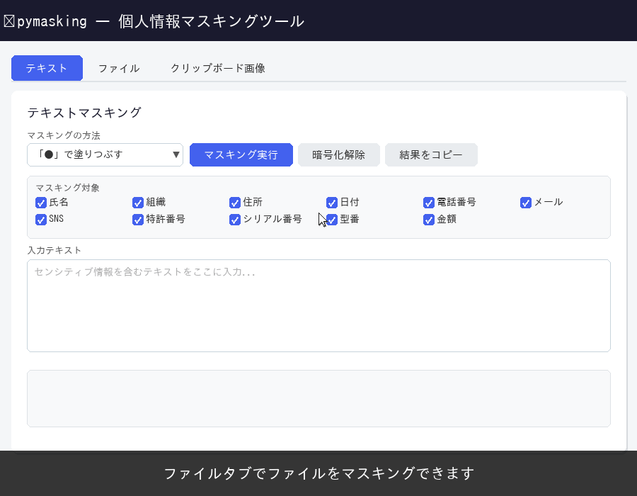
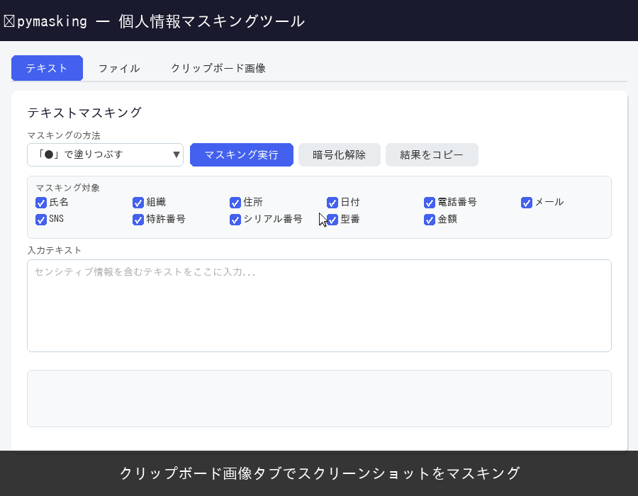

起動方法
pymasking.lnkをダブルクリックする- コマンドプロンプト（黒い画面）が起動し、自動的にブラウザが起動する
終了方法
- ブラウザを閉じる
-
コマンドプロンプト（黒い画面）は 15 秒後に自動的に終了する
終了しない場合は
Ctrl + Cを連打して終了させる
データマスキング 3 種
1テキストマスキング

2ファイルマスキング

3クリップボードマスキング

インストール方法
1
pymasking.7z をダウンロードする
2
ダウンロードした pymasking.7z を Windows 11 の標準の解凍方法で展開する
展開先に以下のパスを貼り付ける：
%LOCALAPPDATA%\pymasking
3
pymasking のショートカットをデスクトップにコピーする
%LOCALAPPDATA%\pymasking\pymasking.lnk をデスクトップにコピーする